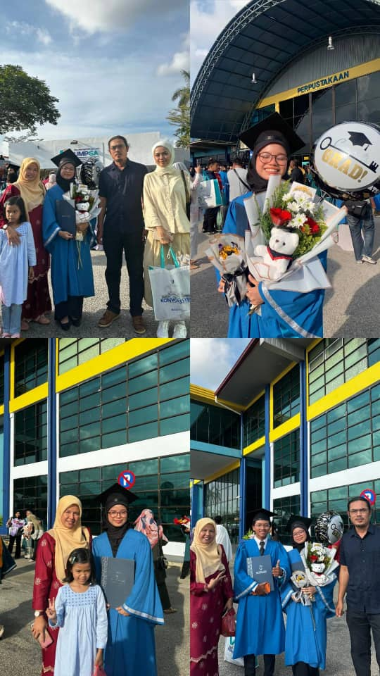
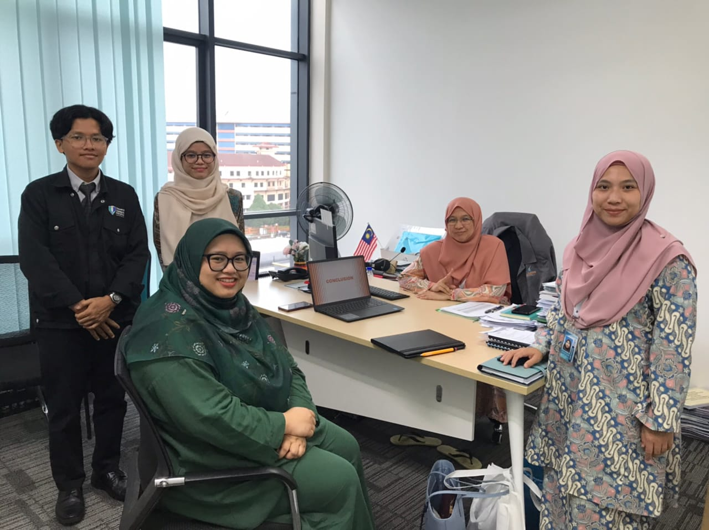
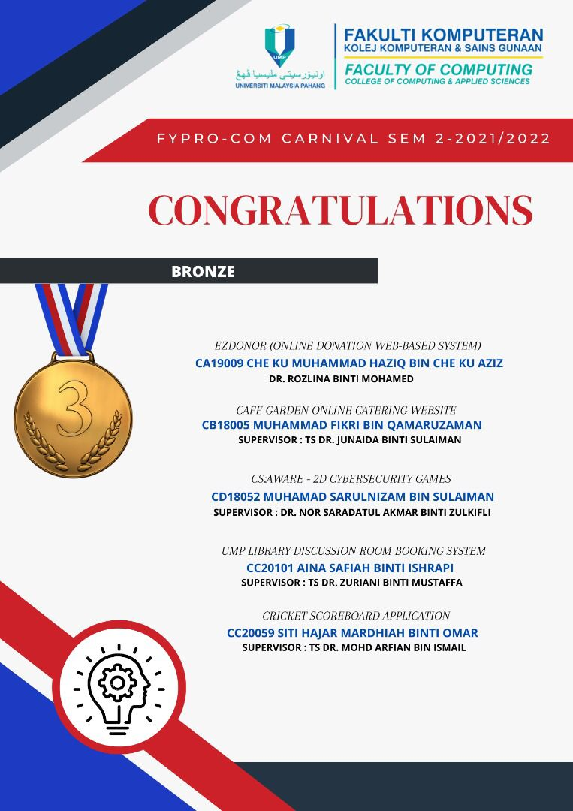
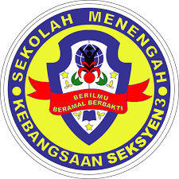

|  | This is my graduate day. I'm successfully graduated from Diploma in Computer Science in UMP (Universiti Malaysia Pahang). This is my happiest day as I made my family proud and got to graduated with my beloved friends. I'm hoping the same for this Degree. |
| This is my intern days while I was pursuing Diploma. It is a last semester before graduated. I was an intern at Majlis Bandaraya Kuantan (MBK) in IT department. Meanwhile I was given a task which is developing a system, I also solved the problems that related to the computers and network along with other interns. This gives me a good experience as I can implement in my daily life. |  |
|  | For my final year project (FYP) during diploma, I developed a system named "UMP Discussion Room Booking System" supervised by Dr. Zuriani. I got Bronze in FYPRO-COM where the chosen students will present the developed system to the industry or companies that invited. It was a good experience for me as I can feel the realistic comments from the judgers other than lecturers. |
| I studied in SMK Seksyen 3 Bandar Kinrara or known as SEMESTIB in Puchong, Selangor since Form 1 in 2015 until Form 5 in 2019. I took Accounting and Arabic for my SPM. I have a wonderful days throughout my highschool life. The school is not far from my home since I regularly walking for 10-15 minutes instead of using transportation. |  |